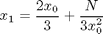

Calcul de la racine cubique de N
C'est une application de la méthode itérative de Newton, qui est étudiée en S2. L'application répétitive de l'équation

permet de converger rapidement vers la solution de la racine cubique de N.
clear; clc; N = 65; % Initialisation Delta = 0.01; % Précision minimale à atteindre x1 = 1.0; % Valeur pour la 1re itération SontInegaux = true; % Permet la 1re itération.
Tant que x1 et x0 sont inégaux, répéter le calcul itératif.
while(SontInegaux) x0 = x1; x1 = 2*x0/3 + N /(3*x0^2); SontInegaux = abs(x1-x0) > Delta; % Lorsque x1 est semblable à x0, % alors x1 est la racine cubique de N. fprintf('%8.5f\n',x1); % Affichage pour illustrer la convergence end
22.33333 14.93233 10.05206 6.91580 5.06354 4.22075 4.03005 4.02075
fprintf('Calcul de la racine cubique de %d :\n',N); fprintf('a) %8.5f par la méthode itérative\n',x1); fprintf('b) %8.5f selon Matlab\n',N^(1/3));
Calcul de la racine cubique de 65 : a) 4.02075 par la méthode itérative b) 4.02073 selon Matlab